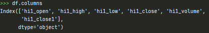
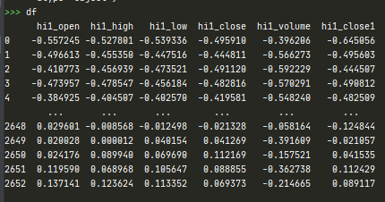
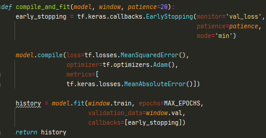
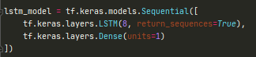

Introduction
LSTM is popular method for time series forecasting, in this article we will use TensorFlow LSTM model to predict HSI futures intraday next high, low and close. This articel is inspired by many research paper I have read before, which some of them can predict well using LSTM model using some simply data. We are not going to dive into the mathematics details, for the mathematics details please read this article.
Data
Daily data are used in this article. We will use StandardScaler to normalize our data. The start of the date is 20100101 and the end is 20201009, 2656 days in total. We will spilt our data into 7:2:1, which is 70% for training, 20% for validation, 10% for testing.
After the preprocess, the data will look like this.
LSTM model setting
Our look back period of LSTM model is 22 and make single-time-step prediction. We will try one LSTM layer with 8 units. We use MeanSquaredError as our loss function and use MeanAbsoluteError to evaluate our model. We also add a early stopping to stop training if MeanSquaredError on our validation data is not improving.
 